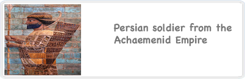
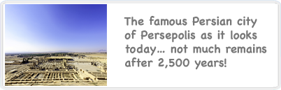
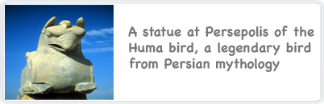

<!-- i-C-a -->
<div data-role="page" id="persians2">
  <div id="anisold"><div id="animatedsoldier"></div><div id="acgreecechar">&nbsp;
    <div data-role="content" class="kidzcontent">
        <div id="titleb-holder"><h1 style="margin-top:0px;">&nbsp;<br>The Persians</h1></div>
        <div class="v-spacer"></div>
        <div class="sidebarleft-half">
        <div id="eal1short-oag">
          <p><a href='#' id="persianwar"></a></p>
        </div>
        <div id="eal2short-oag">
          <p><a href='#' id="persopolis"></a></p>
        </div>
        <div id="eal3short-oag">
          <p><a href='#' id="humabird"></a></p>
        </div>
      </div>
      
      <div id="node-content-half">
        <div id="psbutton-persians">
          <div id="audiobuttonholder-persians"><a href="#" id="start-persians"></a></div>
          <div id="actualaudio-persians" style="display: none;">
          </div>
        </div><!-- end of psbutton -->
        <div id="node-body-holder" style="height:345px;margin-top:-20px;">
          <div id="node-body"></div>
        </div>
        
        <p style="margin-top:20px;">
          <a href="sub-ac-greece-xenophon2.html" data-role="button" data-transition="slide">Hear the story of Xenophon <br>and the education of the Persian King!</a>
        </p>
      </div>
      
    </div> <!-- end content -->  
    <div class="v-spacer"></div>
    <div id="foot-band" style="margin-top:-58px;padding:0 10px;">
      <div style="float:left;width:150px;color:#0071bc;margin:-15px 0 0 0px;">Brought to you by<br>Monash University</div>
      <div style="float:right;width:260px;color:#0071bc;margin:0px 0 0 52px;text-align:right;">Proudly supported by [Partner XYZ]</div>
      <div style="width:253px;height:2px;color:#0071bc;margin:54px auto -15px;"><a href="home2.html" id="homelinkag-persians"></a></div>
    </div>
  </div></div><!--/anisold-->
  <script>
    sound = new Audio(); // 'sound' is now an audio object
    
    (function() {
      var url = "http://back.uvmate.com/jeuel_services/educ.json?nid=84";
     $.getJSON( url, function( data ) {
            $('#node-body').html(data[0].Body);
            
            var html = data[0].Images;
            var re = /]+src="http:\/\/([^">]+)/g;
            var results = re.exec(html);
            var source = results[1];            
            $('#persianwar').attr('href', "JavaScript:html5Lightbox.showLightbox(0, 'http://"+source+"', 'Persian soldier from the Achaemenid Empire');")
            
            if(sound.canPlayType('audio/mpeg')) {
              $('#psbutton-persians').show();
              $('#actualaudio-persians').html('<audio controls preload onpause="playagbg()" onplay="pauseagbg()"><source src="'+ data[0].Audio +'" type="audio/mpeg"></audio>');
            } else {
              sound.src = null;
              $('#psbutton-persians').html('Your system does not support HTML5 Audio.');
              $('#psbutton-persians').show();
            }
         });
    
    $("#persians2").swipe( { swipeRight:goBack, allowPageScroll:"auto"} );
    
    })();
    
    (function() {
      var url = "http://back.uvmate.com/jeuel_services/educ.json?nid=85";
     $.getJSON( url, function( data ) {
            var html = data[0].Images;
            var re = /]+src="http:\/\/([^">]+)/g;
            var results = re.exec(html);
            var source = results[1];            
            $('#persopolis').attr('href', "JavaScript:html5Lightbox.showLightbox(0, 'http://"+source+"', 'The famous Persian City of Persopolis as it looks today... not much remains after 2,500 years!');")
         });
    })();
    
    (function() {
      var url = "http://back.uvmate.com/jeuel_services/educ.json?nid=86";
     $.getJSON( url, function( data ) {
            var html = data[0].Images;
            var re = /]+src="http:\/\/([^">]+)/g;
            var results = re.exec(html);
            var source = results[1];            
            $('#humabird').attr('href', "JavaScript:html5Lightbox.showLightbox(0, 'http://"+source+"', 'A statue at Persopolis of the Huma Birds, a legendary bird from Persian mythology');")
         });
    })();
    
    $('#start-persians').on('click', function() {
      $('#actualaudio-persians').show();
      var oldHeight = $('#node-body-holder').height();
      var newHeight = oldHeight - $('#actualaudio-persians').height();
      $('#node-body-holder').height(newHeight);
    });
    
    function goBack() {
      $.mobile.changePage("sub-ac-greece-aroundag2.html");
    }
    $('#homelinkag-persians').on('tap', function() { 
      mainaudiobg.play(); agsoundbg.pause(); agsoundbg.currentTime = 0; 
    });
  </script>
</div> <!--//home-->